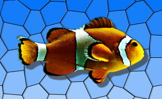

QGraphicsDropShadowEffect Class Reference
[QtGui module]
该QGraphicsDropShadowEffect类提供了一个阴影效果。More...
继承QGraphicsEffect。
Methods
-
__init__ (self, QObject parent = None)
-
float blurRadius (self)
-
QRectF boundingRectFor (self, QRectF rect)
-
QColor color (self)
-
draw (self, QPainter painter)
-
QPointF offset (self)
-
setBlurRadius (self, float blurRadius)
-
setColor (self, QColor color)
-
setOffset (self, QPointF ofs)
-
setOffset (self, float dx, float dy)
-
setOffset (self, float d)
-
setXOffset (self, float dx)
-
setYOffset (self, float dy)
-
float xOffset (self)
-
float yOffset (self)
Qt Signals
Detailed Description
该QGraphicsDropShadowEffect类提供了一个阴影效果。
阴影效果渲染与阴影的来源。阴影的颜色可以使用修改的setColor（）函数。阴影的偏移值可以使用修改的setOffset（ ）函数和阴影的模糊半径可以与被改变setBlurRadius（）函数。
默认情况下，阴影是半透明的暗灰色（QColor（ 63 ， 63 ， 63 ， 180 ） ）的影子，模糊为1的半径的8个像素向右下方偏移。阴影的偏移值被指定在设备坐标。

Method Documentation
QGraphicsDropShadowEffect.__init__ (self, QObject parent = None)
该parent的说法，如果不是没有，原因self通过Qt的，而不是PyQt的拥有。
构造一个新的QGraphicsDropShadowEffect实例。该parent参数被传递到QGraphicsEffect的构造。
float QGraphicsDropShadowEffect.blurRadius (self)
QRectF QGraphicsDropShadowEffect.boundingRectFor (self, QRectF rect)
从重新实现QGraphicsEffect.boundingRectFor（ ） 。
QColor QGraphicsDropShadowEffect.color (self)
QGraphicsDropShadowEffect.draw (self, QPainter painter)
从重新实现QGraphicsEffect.draw（ ） 。
QPointF QGraphicsDropShadowEffect.offset (self)
QGraphicsDropShadowEffect.setBlurRadius (self, float blurRadius)
这种方法也是一个Qt槽与C + +的签名void setBlurRadius(qreal)。
QGraphicsDropShadowEffect.setColor (self, QColor color)
这种方法也是一个Qt槽与C + +的签名void setColor(const QColor&)。
QGraphicsDropShadowEffect.setOffset (self, QPointF ofs)
这种方法也是一个Qt槽与C + +的签名void setOffset(const QPointF&)。
QGraphicsDropShadowEffect.setOffset (self, float dx, float dy)
这种方法也是一个Qt槽与C + +的签名void setOffset(qreal,qreal)。
QGraphicsDropShadowEffect.setOffset (self, float d)
这种方法也是一个Qt槽与C + +的签名void setOffset(qreal)。
QGraphicsDropShadowEffect.setXOffset (self, float dx)
这种方法也是一个Qt槽与C + +的签名void setXOffset(qreal)。
QGraphicsDropShadowEffect.setYOffset (self, float dy)
这种方法也是一个Qt槽与C + +的签名void setYOffset(qreal)。
float QGraphicsDropShadowEffect.xOffset (self)
float QGraphicsDropShadowEffect.yOffset (self)
Qt Signal Documentation
void blurRadiusChanged (qreal)
这是该信号的默认超载。
这个信号被发射时的效果的模糊半径的变化。该blurRadius参数保存效果的新的模糊半径。
void colorChanged (const QColor&)
这是该信号的默认超载。
这个信号被发射时的效果的颜色变化。该color参数保存效果的新颜色。
void offsetChanged (const QPointF&)
这是该信号的默认超载。
这个信号被发射时的效果的阴影偏移的变化。该offset参数保存效果的新的阴影偏移。